考试练习后台 产品需求文档
1. 文档说明
- 来源：原型代码反向分析（html-to-prd）
- 范围：应用「考试练习」(
exam)：概览、考试管理、试题库、试卷、证书、习题库及创建/详情页 - 日期：2026-08-24
- 试题库 vs 习题库：同一套页面组件，
QuestionBankScope= exam | practice，数据 store 分离
2. 产品概述
定位：考试与练习题库运营后台：考试发布、组卷、证书、成绩/排行查看。
用户：培训/考试管理员。待确认与课程应用权限边界。
3. 页面结构 / 信息架构
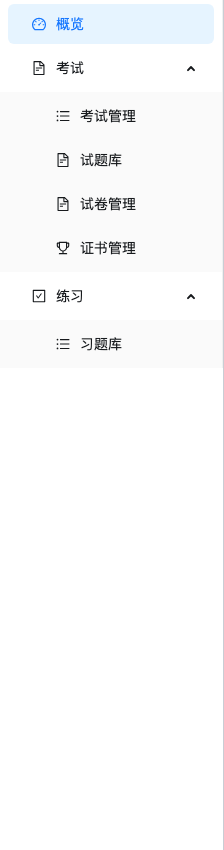
- 侧栏：概览；考试组（考试管理/试题库/试卷/证书）；练习组（习题库）
- 默认落地：
exam-list（非 overview） - Hash 形如
#/exam/exam-detail/1/records
4. 已实现功能清单
| 模块 | 功能 | 状态 |
|---|---|---|
| 概览 | 进行中/待发布/及格率等 KPI 与列表 | 代码已实现 |
| 考试 | 分类树、发布、表单绑试卷/证书、详情记录&排行 | 代码已实现 |
| 试题/习题 | 多题型 CRUD、启禁用、分类；导入/AI=开发中 toast | 代码已实现 |
| 试卷 | 随机/固定、按题库或指定题目、题型分值 | 代码已实现 |
| 证书 | 证书模板列表/编辑；页有迁移遮罩文案 | 代码已实现 |
5. 用户流程
- 试题库录入 → 组卷（抽题规则）→ 新建考试绑定试卷与证书 → 发布
- 详情查看考试记录/排行（导出仅 toast）
6. 页面级需求说明
6.1 概览
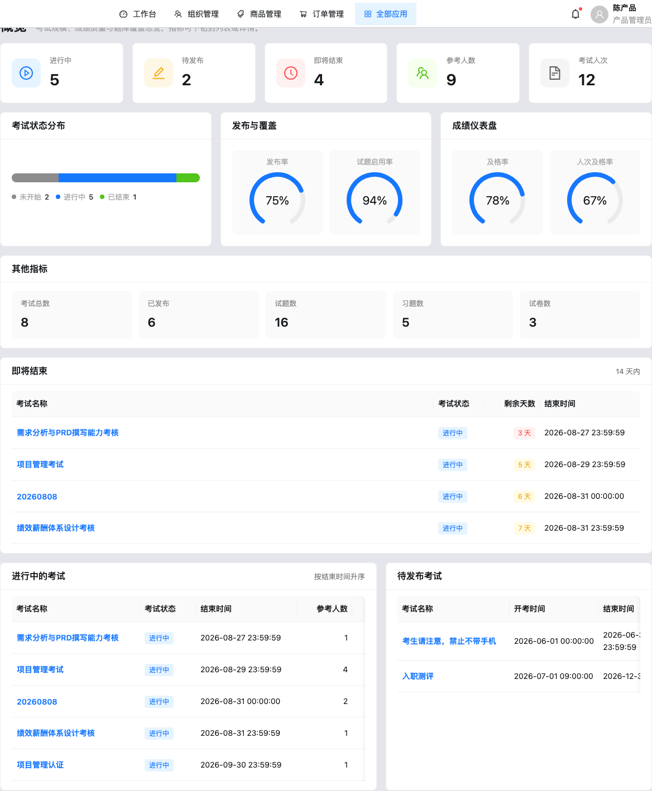
6.2 考试管理
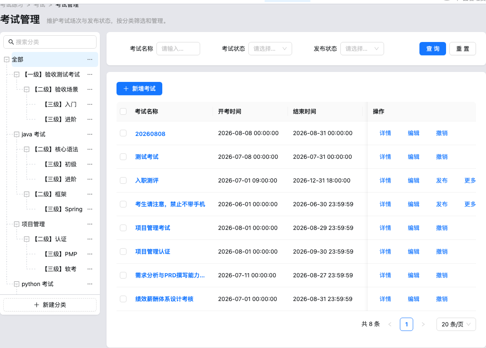
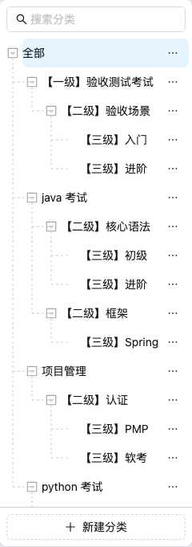
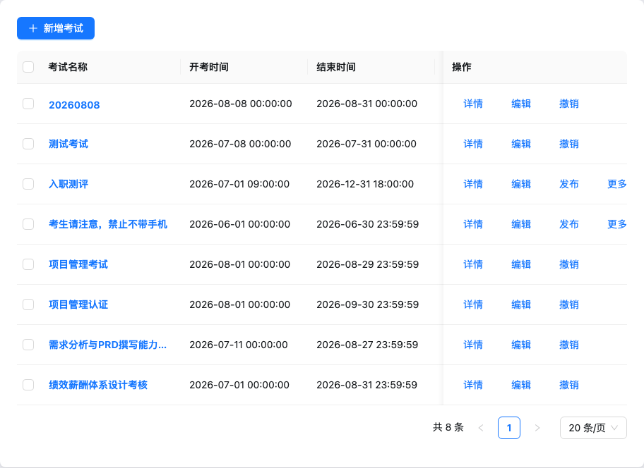
筛名称/考试状态/发布状态；行：详情编辑发布撤销删除（仅未发布可删）；批量发布/撤销/设分类。
6.3 新增考试 / 详情
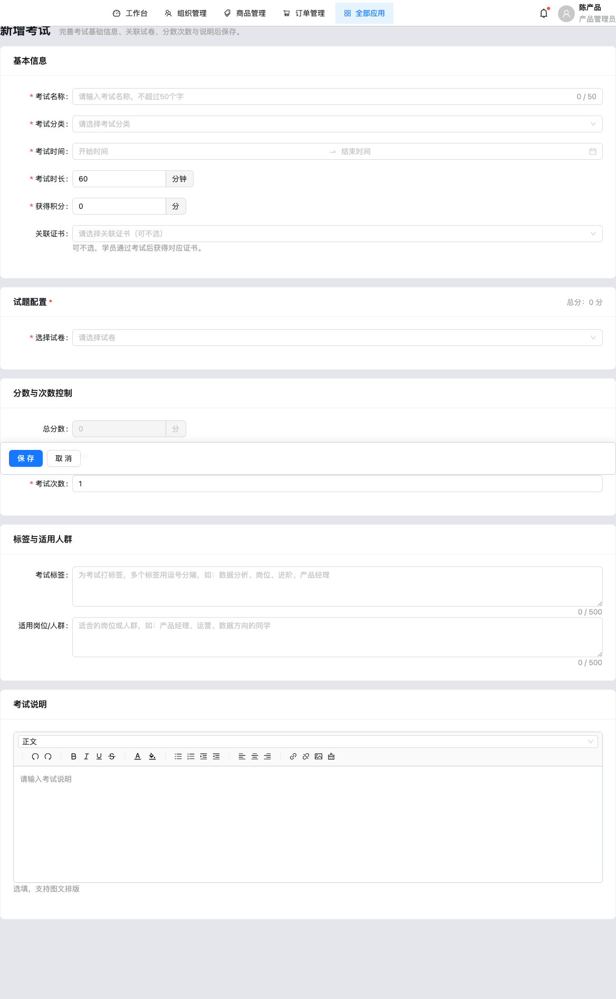
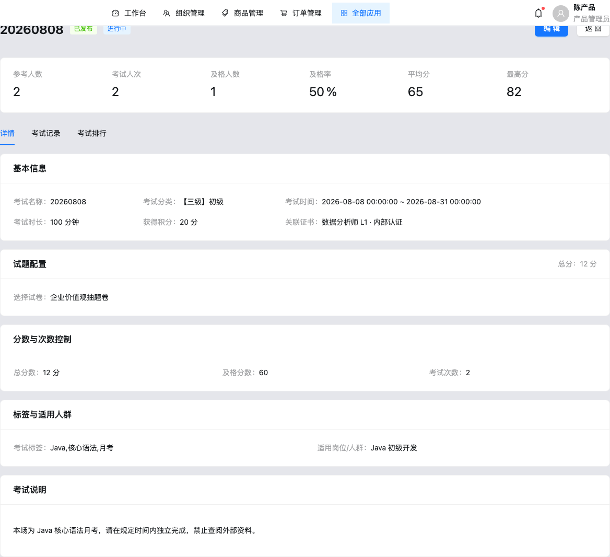
表单：名称、分类、时段、时长、学分、证书、试卷、及格分、次数、标签、人群、说明。详情 Tab：detail / records / ranking。
6.4 试题库 / 习题库 / 试卷 / 证书
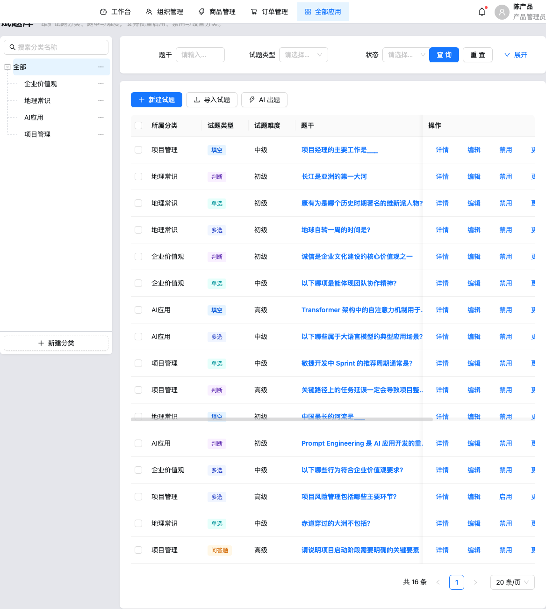
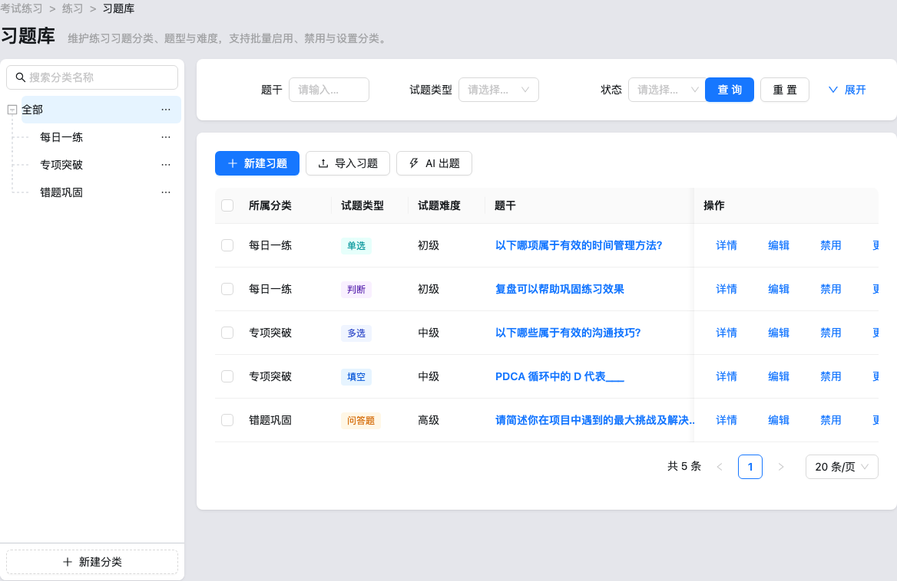
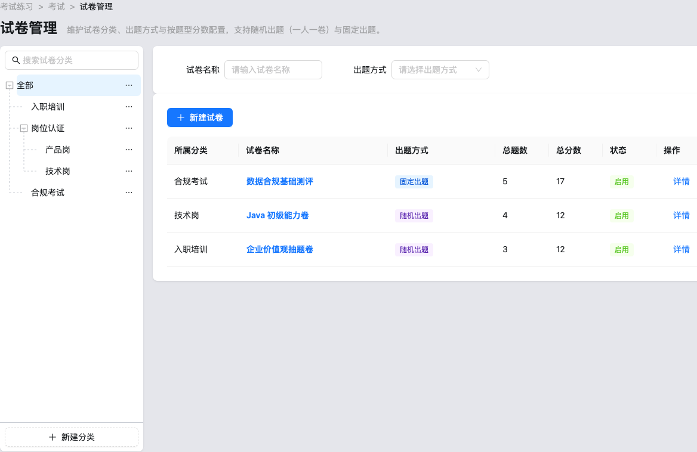
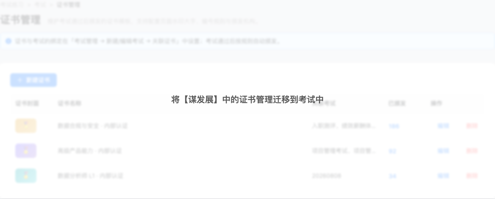
7. 数据字段与枚举
| 枚举 | 取值 |
|---|---|
| examPublishStatuses | 未发布 / 已发布 |
| examStatuses | 未开始 / 进行中 / 已结束 |
| questionTypes | 单选/多选/判断/填空/问答题 |
| paperGenerationModes | 随机出题 / 固定出题 |
| certificateCoverThemes | gold / purple / teal |
8. API / 数据接口清单
内存 store：exam / question(exam|practice) / paper / certificate。无 localStorage。attempts 为只读常量 initialExamAttempts。
9. 非功能需求
分类最多 3 级；危险删除确认。权限与真实导出 待确认。
10. 埋点与指标建议
建议补充 exam_publish / paper_save / question_import。
11. 验收标准
- Given 未发布考试，When 删除，Then 可删；已发布不可删。
- Given 启用试卷，When 考试表单选择，Then 总分只读来自试卷。
- Given 试题库与习题库，When 分别新增，Then 数据互不影响。
12. 风险与待确认问题
- 导入/AI 出题、导出仅为 toast。
- examStatus 表单不编辑，未见按时间自动推进。
- 证书页迁移遮罩；自定义有效期无日期字段。
- 组卷选题仅绑考试试题库，不绑习题库。